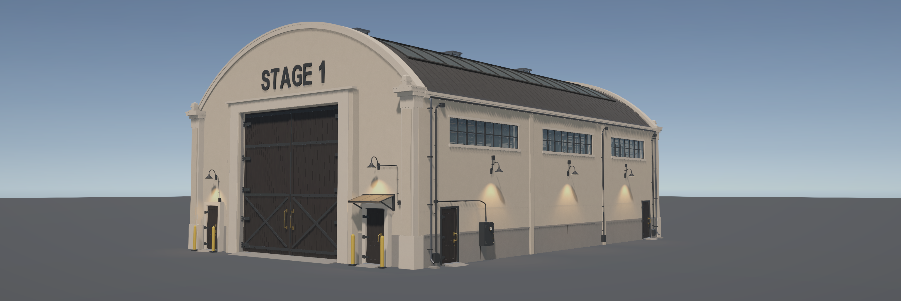
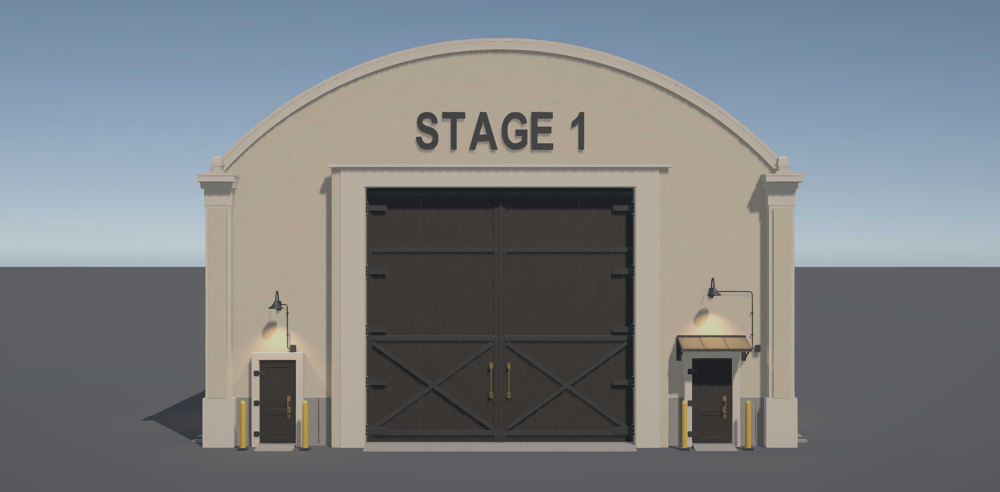
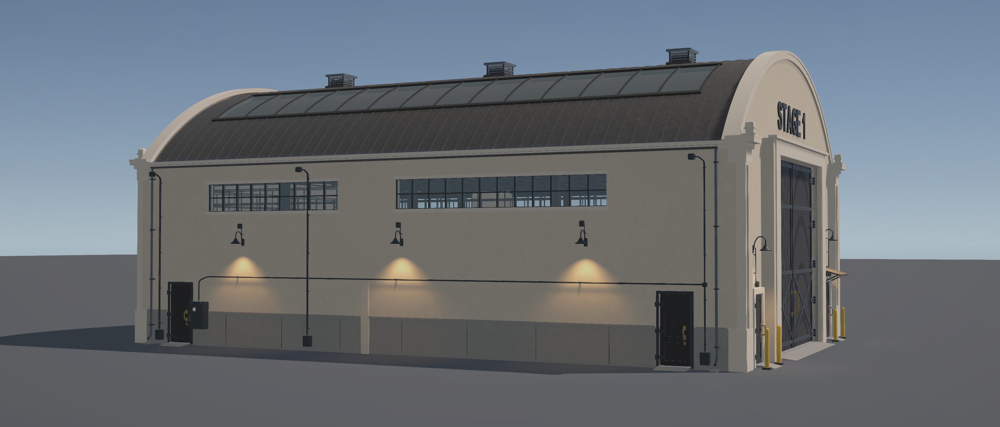
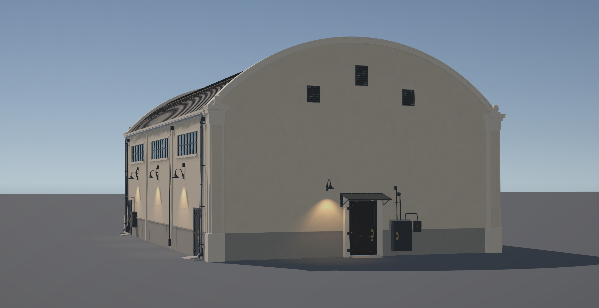

Current gutter/eave follow-up. The finial geometry shown below is preserved; these captures precede the gutter correction.
Revision 04 follow-up · Stopped for review
Corner finial clearance
All four approved ornaments retain their shapes and sizes. Their plinths now stand clear of the roof/end cap, supported by the locally extended cap courses. Source geometry confirms at least 40 mm open separation at every corner.
Four original and sixteen corrected Unity captures. Every corner is shown from three directions after correction. Click any image for its native resolution. Images are unretouched.
Front three-quarter

Corrected Unity candidate Approved concept — unchanged reference
Approved concept — unchanged referenceStraight front

Corrected Unity candidate Approved concept — unchanged reference
Approved concept — unchanged referenceSide

Corrected Unity candidate Approved concept — unchanged reference
Approved concept — unchanged referenceRear

Corrected Unity candidate Approved concept — unchanged reference
Approved concept — unchanged reference